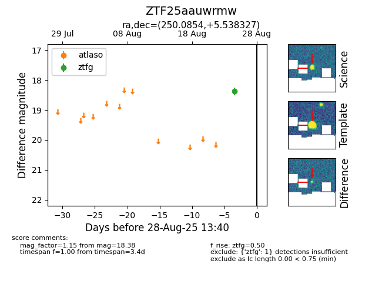

Target ZTF25aauwrmw at 2025-08-26 12:30, see:
FINK: fink-portal.org/ZTF25aauwrmw
Lasair: lasair-ztf.lsst.ac.uk/objects/ZTF25aauwrmw
ALeRCE: alerce.online/object/ZTF25aauwrmw
alt names
ZTF25aauwrmw (ztf,fink)
coordinates:
equatorial (ra, dec) = (250.0854,+5.53833)
galactic (l, b) = (22.1223,+31.56958)
photometry
last ztfg=18.38
1 ztfg detections
